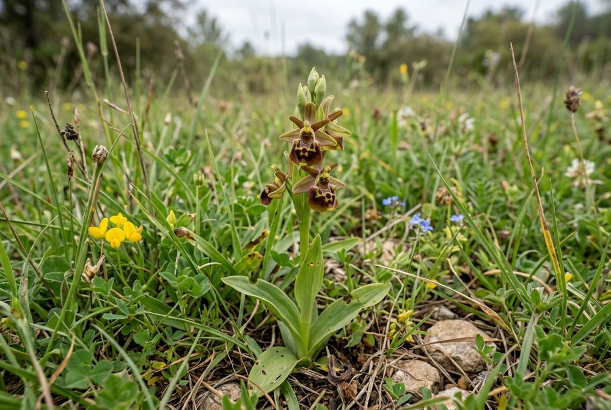

Photothèque
Photothèque : flore et habitats
Photographies naturalistes de la catégorie « Flore et habitats ». Les photographies originales sont disponibles sur demande.

Flore et habitats
Cliquez sur une image pour l'agrandir.
Visuels générés à titre illustratif, à remplacer par les photographies d'Altifaune.